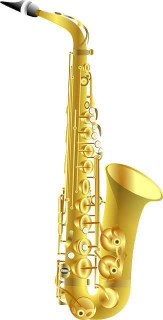

The saxophone (often referred to colloquially as the sax) is a type of single-reed woodwind instrument with a conical
body, usually made of brass. As with all single-reed instruments, sound is produced when a reed on a mouthpiece vibrates
to produce a sound wave inside the instrument's body. The pitch is controlled by opening and closing holes in the body
to change the effective length of the tube. The holes are closed by leather pads attached to keys operated by the
player. Saxophones are made in various sizes and are almost always treated as transposing instruments. A person who
plays the saxophone is called a saxophonist or saxist.
The saxophone is used in a wide range of musical styles including classical music (such as concert bands, chamber music,
solo repertoire, and occasionally orchestras), military bands, marching bands, jazz (such as big bands and jazz combos),
and contemporary music. The saxophone is also used as a solo and melody instrument or as a member of a horn section in
some styles of rock and roll and popular music.
The saxophone was invented by the Belgian instrument maker Adolphe Sax in the early 1840s and was patented on 28 June
1846. Sax invented two groups of seven instruments each—one group contained instruments in C and F, and the other group
contained instruments in B♭ and E♭. The B♭ and E♭ instruments soon became dominant, and most saxophones encountered
today are from this series. Instruments from the series pitched in C and F never gained a foothold and constituted only
a small fraction of instruments made by Sax. High-pitch (also marked "H" or "HP") saxophones tuned sharper than the
(concert) A = 440 Hz standard were produced into the early twentieth century for sonic qualities suited for outdoor use,
but are not playable to modern tuning and are considered obsolete. Low-pitch (also marked "L" or "LP") saxophones are
equivalent in tuning to modern instruments. C soprano and C melody saxophones were produced for the casual market as
parlor instruments during the early twentieth century, and saxophones in F were introduced during the late 1920s but
never gained acceptance.
The modern saxophone family consists entirely of B♭ and E♭ instruments. The saxophones in widest use are the B♭ soprano,
E♭ alto, B♭ tenor, and E♭ baritone. The E♭ sopranino and B♭ bass saxophone are typically used in larger saxophone choir
settings, when available.
|  | |
| Woodwind instrument | |
|---|---|
| Classification | Single-reed |
| Hornbostel-Sachs classification | 422.212-71 (Single-reed aerophone with keys) |
| Inventors | Adolphe Sax |
| Developed | 1840s |
| Playing range | |
|
Most saxophones share the same written range in treble clef of just over two and a half octaves. Most can reach higher notes using altissimo fingerings |
|
Adolphe Sax was a Belgian-born instrument-maker, flautist, and clarinetist working in Paris. He constructed saxophones
in several sizes by the early 1840s, but he did not receive a patent for the instrument until June, 28 1846. The
instrument was first officially revealed to the public in the presentation of his bass saxophone in C at an exhibition
in Brussels in 1841. Sax also gave private showings to Parisian musicians in the early 1840s. He drew up plans for 14
different types of saxophones, but they were not all realized.
The precise inspiration for the instrument is unknown, but there is good evidence that the saxophone was created by
fitting a clarinet mouthpiece to an ophicleide, a type of conical bore, brass-keyed bugle. (Sax built ophicleides, among
other instruments, in the late 1830s).
Sax's intent was to invent an entirely new instrument in order to provide bands and orchestras with a bass sound to
compliment the woodwind and brass sections. (Tubas began to appear around this time with a similar purpose.) Sax's
instrument would be capable of a more refined performance than the ophicleide, but with enough power to be used
outdoors. Sax intended to harness the finesse of the woodwind with the power of a brass instrument. For a long time, the
saxophone was restricted to military bands and not used in orchestral groups, due in part to Sax's tendency to offend
rival instrument manufacturers, resulting in prejudice toward the man and his instrument.
For the duration of the patent, only the Sax factory could legally manufacture or modify the instrument. However this,
along with a number of other of Sax's patents, were routinely breached by his rivals. After the patent expired in 1866,
various manufacturers introduced competing models and made modifications to Sax's original design.
The saxophone uses a single reed mouthpiece similar to that of a clarinet, but with a round or square evacuated inner
chamber. It is considerably larger and has cork adjusting to the neck. The saxophone's body is effectively conical,
giving it acoustic properties more akin to the oboe than to the clarinet. However, unlike the oboe, whose tube is a
single cone, most saxophones have a distinctive curve at the bell.
Straight soprano saxophones are more common than curved ones, and very few straight alto, and tenor saxophones have been made,
as novelties. Straight baritone and C melody saxophones have occasionally been made as custom instruments, but were never
production items. There is some debate among players as to whether the curve affects the tone or not.
Saxophones produce different notes using a key system consisting of pads and tone holes. A saxophone has 21 to 23 keys,
depending on whether it has a high F#, a high G, or a low A key. (Since 1970, the high F# key has become common among
intermediate and professional level instruments, while the high G key is found on only a few modern sopranos.) When
pressure is applied to a key it opens or closes one or more of the tone holes by lifting or lowering a pad.
The pads, usually made of leather or an artificial material that acts as leather, cover tone holes and form an airtight
seal, preventing any air from escaping. Depending on where this pad/tone hole combination is on the saxophone, it will
raise or lower the pitch. Almost all woodwind instruments use the same idea to execute different notes, although the
details of each instrument can differ greatly.
The family of eight saxophones invented by Adolphe Sax and patented on March 21, 1846 is today focused on seven
instruments.
Right from the beginning, the alto and tenor saxophones have been the models most in demand amongst composers. Other
members of the family, although less commonly used, have appeared progressively throughout the evolution of the
classical repertoire. Today jazz, contemporary music and various other musical styles are in the process of reclaiming
all the instruments of the saxophone family under their ever diversifying branches.
let's identify who are these 7 kinds of saxophones.
Although little used today, the E-flat saxophone sopranino is increasingly in demand in jazz and contemporary music. It must be noted, however, that the accuracy and precision required to play this delicate instrument demands great dexterity. Nevertheless, it has found a home within various saxophones ensembles and concert bands.
Although curved sopranos also exist, the shape more commonly resembles the straight body of the clarinet. Its tone evokes that of the oboe, while its low register resembles the timbre of the English horn. In the saxophone quartet, it holds the role of first violin. Sydney Bechet introduced it into the United States upon his return from London in 1919.
The most popular member of the saxophone family, it is on this instrument that many first discover the saxophone. Bizet immortalized it in his celebrated Arlésienne in which it was given the role of soloist. It has also been used by some influential composers from the beginning of the 20th century, notably Ravel in his orchestration of Moussorgsky's Pictures at an Exhibition and Berg in his Concerto To the Memory of an Angel.
It was largely through jazz that the true nature of the B-flat tenor saxophone has been revealed. In particular by Coleman Hawkins, a figure often present at the forefront of major musical innovation, and to whom the history of jazz owes much. Hawkins popularized this instrument through the interpretation of his celebrated Body and Soul in October 1939.
The deep and warm tone of the E-flat baritone saxophone provides a sound close to the cello and even to the human voice. But the baritone not only provides the bass voice of a quartet, it also constitutes the harmonic and rhythmic pulse of any group. Influential names in jazz like Gerry Mulligan and Pepper Adams have managed to successfully establish it as a soloist instrument.
The size, weight and cost of the B-flat bass saxophone limit its presence within groups. It always provides an efficient basis in wind sections and various ensembles. Today, it is more and more integrated into jazz and attracts composers of contemporary and improvised music.
The saxophone double bass in E♭ is very seldom used today. Despite its ability to give off impressively deep sounds, its repertoire is practically non-existent. Few examples are in circulation, its development having been rarely thoroughly studied.
Charmie Weerapperuma 2024 | © All Rights Reserved